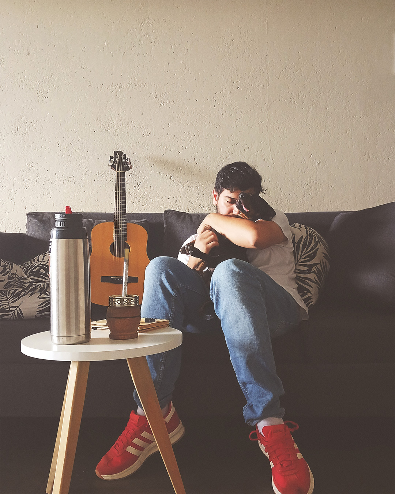

FER FERNANDEZ
auténtico, clásico y sin prisa.
Un nuevo viaje comienza ⏳
Último Lanzamiento
Hablemos
Para contrataciones o simplemente saludar:
contactoferfernandez@gmail.com
auténtico, clásico y sin prisa.
Un nuevo viaje comienza ⏳
Para contrataciones o simplemente saludar:
contactoferfernandez@gmail.com
El comienzo de mi historia.
Descubriste la parte real. Sin filtros, sin prisa. Este EP son 5 canciones que escribí cuando nadie miraba.
💚 PRE-SAVE EN SPOTIFY